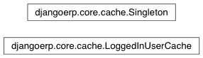

cache¶

-
class
djangoerp.core.cache.LoggedInUserCache[código fonte]¶ Stores the current user as a member attribute of a singleton.
WARNING: if you manually change the value of “LoggedInUserCanche.user” property for your special purposes, remember to restore it on its previous value at the end of your special code block. i.e.:
>> logged_cache = LoggedInUserCache() >> current_user = logged_cache.user # Save the previous value! >> logged_cache.user = my_specific_needs_user >> # ... code ... # >> logged_cache.user = current_user # Restore the value!
-
clear()[código fonte]¶
-
has_user¶
-
instance= None¶
-
set_user(request)[código fonte]¶
-
user= <django.contrib.auth.models.AnonymousUser object>¶
-
-
class
djangoerp.core.cache.Singleton(name, bases, dicts)[código fonte]¶ Singleton pattern.
-
mro() → list¶ return a type’s method resolution order
-